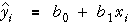
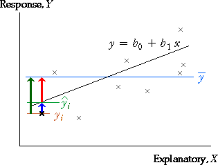
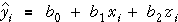

Components for simple linear model
In the simple linear model,
 ,
,
fitted values are obtained from the least squares estimates,

The difference between yi and the overall mean response can be written as the sum of two components,

The components can be displayed graphically as follows:

In particular, the explained components are the distances between the least squares line and the horizontal line representing the mean.
Regression model with two explanatory variables
A similar result holds for regression models with two explanatory variables,
 ,
,
where the fitted values are

Again we can write:

The components can also be represented graphically, but this requires a 3-dimensional scatterplot of the data.
Body fat
The diagram below again shows the relationship between the body fat of 25 men and their abdomen circumference and height.
The mean is represented by a blue plane that is parallel to the x-z axes. The total components are the green vertical lines from the crosses to this plane. Drag the centre of the diagram to rotate (or use the buttons underneath).
Select Residual from the pop-up menu. The least squares equation is represented by the grey plane and the residuals are the vertical distances from the crosses to this plane. Again rotate to get a better feel for these components.
Finally select Explained by regression from the pop-up menu and rotate. The explained components are the vertical distances between the two planes at each data point.
Interpretation
| Total components | These differences reflect the total variability of the response — without taking account of either of the two explanatory variables. | |
| Explained components | These components describe how much the predicted response changes from using the least squares line (as opposed to simply using the overall mean as a prediction). | |
| Residual components | The residuals describe the extent to which the two explanatory variables fail to predict the response. Their variation is not explained by the model. |